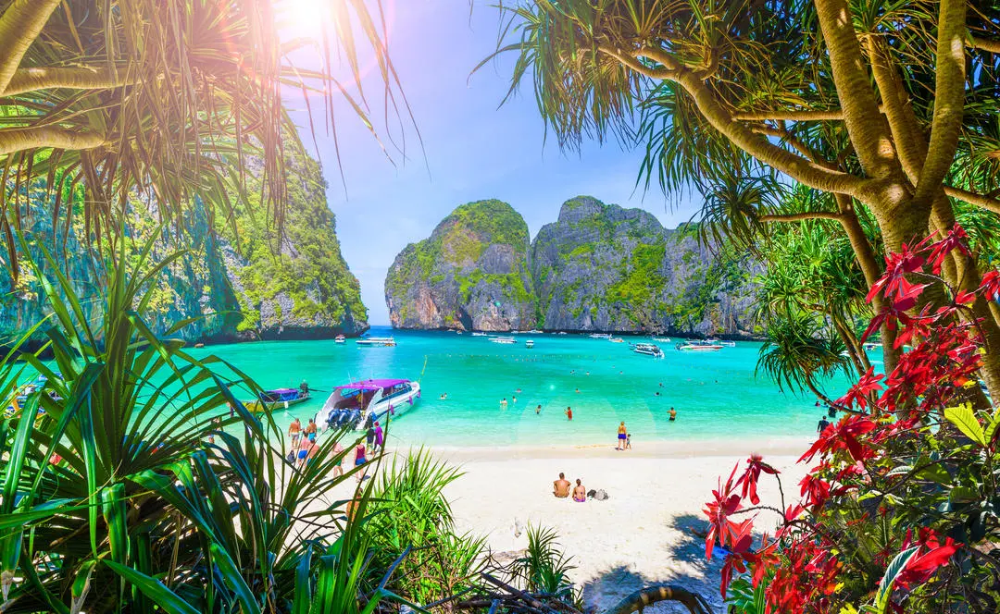
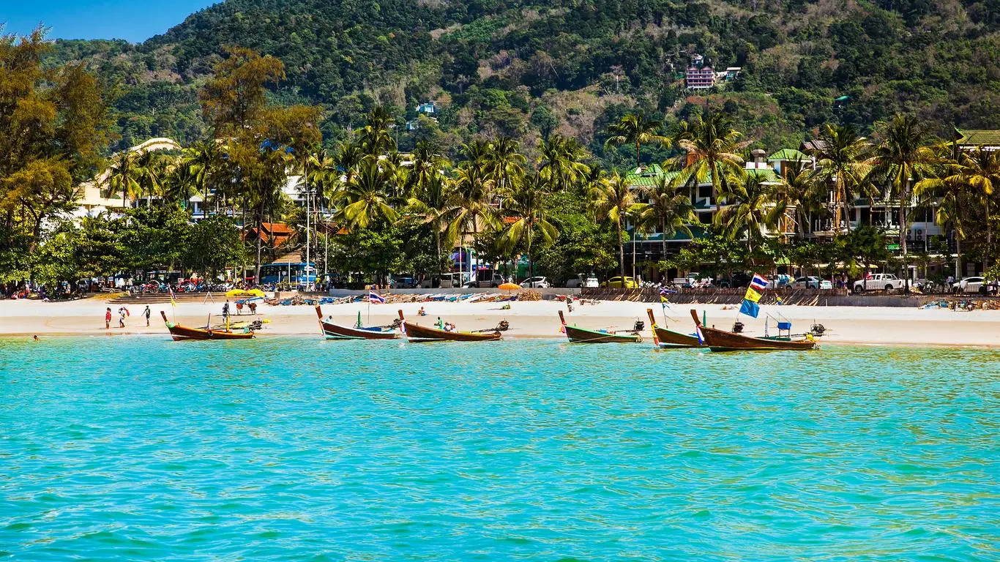

Les plus belles plages de Thaïlande
La Thaïlande est réputée pour ses magnifiques plages aux eaux cristallines et aux paysages paradisiaques.
1. Maya Bay
Maya Bay est l'une des plages les plus célèbres de Thaïlande, située sur l'île de Koh Phi Phi Leh. Célèbre pour son apparition dans le film "La Plage" avec Leonardo DiCaprio, Maya Bay attire des milliers de visiteurs chaque année en raison de sa beauté naturelle à couper le souffle.
2. Railay Beach
Railay Beach, également connue sous le nom de Rai Leh, est une plage isolée accessible uniquement par bateau en raison des falaises calcaires qui l'entourent. Elle est réputée pour son sable blanc, ses eaux turquoises et ses impressionnantes formations rocheuses.

3. Patong Beach
Patong Beach est l'une des plages les plus animées de l'île de Phuket. Elle offre une atmosphère vibrante avec ses nombreux bars, restaurants et boutiques. La plage elle-même est magnifique, avec son sable fin et ses eaux claires idéales pour la baignade.
4. Koh Nang Yuan
Koh Nang Yuan est un petit archipel situé près de l'île de Koh Tao. Connu pour ses eaux cristallines et ses récifs coralliens colorés, c'est un endroit idéal pour la plongée avec tuba et la plongée sous-marine. L'île est reliée par un banc de sable qui émerge à marée basse.
Commentaires
John Doe - 10 mars 2024
C'est un endroit incroyable, j'ai hâte d'y retourner !
Jane Smith - 23 mars 2024
J'ai visité ces plages l'année dernière, c'était vraiment paradisiaque !
Ajouter un commentaire